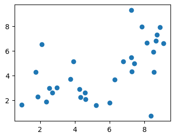
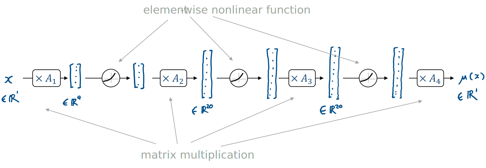
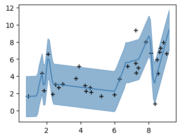

This is a brief introduction to PyTorch, designed to complement the IB Data Science course. It assumes you’re familiar with the idea of maximum likelihood estimation. We’ll use PyTorch to represent a probability model for regression, and fit it.
There are many other tutorials on PyTorch, including the tutorial in the official documentation. They typically present PyTorch as a software library, and go into much more depth on tensors and GPUs and so on. But they often don’t give much guidance on how to use PyTorch for data science.
In this tutorial we’ll work with the data behind the xkcd 2048 comic on curve-fitting. First, load the dataset:
url = 'https://www.cl.cam.ac.uk/teaching/current/DataSci/data/xkcd.csv'
xkcd = pandas.read_csv(url)
fig,ax = plt.subplots(figsize=(4,3))
ax.scatter(xkcd.x, xkcd.y)
plt.show()
Consider the probability model \[ Y_i \sim a + b x_i + c x_i^2 + N(0,\sigma^2). \] We can fit this model to the dataset using maximum likelihood estimation. The fitted function \(\hat{a}+\hat{b}x+\hat{c}x^2\) is shown below. The fitted standard deviation \(\hat{\sigma}\) is also shown, by a ribbon extending above and below the fitted line by \(2\hat{\sigma}\).
EXERCISE 1. Fit this model using
scipy.optimize.fmin. You will need to implement a function
that computes the log likelihood, call it
logPr(y, x,a,b,c,σ). To keep your code tidy, start by
defining a helper function that computes the predicted value,
def μ(x, a,b,c): return a + b*x + c*x**2Plot the fitted μ function, and add the ribbon using fill_between.
def μ(x, a,b,c):
return a + b*x + c*x**2
def logPr(y, x,a,b,c,σ):
return np.sum(scipy.stats.norm.logpdf(y, loc=μ(x,a,b,c), scale=np.sqrt(σ**2)))
ahat,bhat,chat,σhat = scipy.optimize.fmin(lambda θ: -logPr(xkcd.y, xkcd.x, *θ), [1,1,0,1])
# Expected answer for log likelihood: -61.575367
fig,ax = plt.subplots(figsize=(4,3))
ax.scatter(xkcd.x, xkcd.y)
xnew = np.linspace(0,10,100)
ynew = μ(xnew, ahat, bhat, chat)
ax.plot(xnew, ynew, color='black')
ax.fill_between(xnew, ynew-2*σhat, ynew+2*σhat, color='steelblue', alpha=.6)
plt.show()To fit our probability model, we have to maximize the log likelihood function, \[ \log\operatorname{Pr}(y;x,a,b,c,\sigma). \] Here, \(x\) and \(y\) are the data that we’re given (both of them numpy vectors of 31 elements), and the other four parameters are unknowns that we want to maximize over.
In PyTorch, we define a function with unknown parameters by creating
a class that inherits from torch.nn.Module. Declare any
unknowns in the constructor, wrapping them in
torch.nn.Parameter to tell PyTorch that they are to be
optimized over. Also, define a forward method that does the
work of actually computing the value of the function; this will be
invoked automatically when we call our function object. Here’s an
example:
import torch
import torch.nn as nn
class MyFunction(nn.Module):
def __init__(self):
super().__init__()
self.θ = nn.Parameter(torch.tensor(1.0))
def forward(self, x):
return (x - self.θ) ** 2
f = MyFunction()
f(torch.tensor(3.1))Anything numerical we do in PyTorch, we do on
torch.tensor objects. These are similar to numpy arrays;
there are tensor methods that mimic many of the numpy array methods; and
simple Python arithmetical operations like - and
** are overridden to work on tensors. When we implement a
function using only tensor operations, then PyTorch can automatically
compute the derivative of our function, and this is what allows it to do
efficient optimization using gradient descent.
EXERCISE 2. Reimplement your
logPr function as a PyTorch Module. It should have a
forward(self,y,x) method. Note that x and
y will need to be tensors; to convert from numpy arrays
use
x = torch.tensor(xkcd.x, dtype=torch.float)
y = torch.tensor(xkcd.y, dtype=torch.float)import torch
import torch.nn as nn
class LogPr(nn.Module):
def __init__(self):
super().__init__()
self.a = nn.Parameter(torch.tensor(1.0))
self.b = nn.Parameter(torch.tensor(1.0))
self.c = nn.Parameter(torch.tensor(0.0))
self.σ = nn.Parameter(torch.tensor(1.0))
def μ(self, x):
return self.a + self.b * x + self.c * x**2
def forward(self, y, x):
σ2 = self.σ ** 2
return torch.sum(- 0.5*torch.log(2*np.pi*σ2) - torch.pow(y - self.μ(x), 2) / (2*σ2))
x = torch.tensor(xkcd.x, dtype=torch.float)
y = torch.tensor(xkcd.y, dtype=torch.float)
logPr = LogPr()
logPr(y, x)
# expected output: tensor(-185.3153, grad_fn=<SumBackward0>)PyTorch is, at its core, a library to make it easy to minimize complicated functions using gradient descent.
optimizer object that knows about these
parameters,import torch
f = MyFunction()
optimizer = torch.optim.Adam(f.parameters())
for epoch in range(5000): # number of gradient-descent steps
optimizer.zero_grad()
val = f(torch.tensor(3.0))
val.backward() # compute the gradient
optimizer.step()
print(f.θ)EXERCISE 3. Repeat the optimization from exercise 1, but using PyTorch. You should be able to get a good answer within 10,000 iterations (!).
import torch
import torch.nn as nn
class LogPr(nn.Module):
# as for Exercise 2
x = torch.tensor(xkcd.x, dtype=torch.float)
y = torch.tensor(xkcd.y, dtype=torch.float)
logPr = LogPr()
optimizer = torch.optim.Adam(logPr.parameters())
for epoch in range(10000):
optimizer.zero_grad()
loglik = logPr(y, x)
(-loglik).backward() # we want to maximize logPr, i.e. minimize -loglik
optimizer.step()
print(logPr(y,x))
# expected output: tensor(-61.5762, grad_fn=<SumBackward0>)To keep ourselves (reasonably) sane, it can be useful to split a Module into building blocks. If we define a module \(A\), then define another module \(B\) which uses it, as in the code below, then when we optimize over \(B\)’s unknown parameters it will automatically include \(A\)’s unknown parameters in the optimization.
class A(nn.Module):
...
class B(nn.Module):
def __init__(self):
self.a = A()EXERCISE 4. Refactor the code from
exercises 2 and 3 as follows: create a QuadraticCurve
module to implement the function \(μ(x)=a+bx+c
x^2\), and a second module called RQuadratic which
represents a collection of independent Normal random variables \(N(\mu(x_i),\sigma^2)\). Here is a
skeleton.
class QuadraticCurve(nn.Module):
def forward(self, x):
# return a + b*x + c*x^2, where x is a tensor of real values
class RQuadratic(nn.Module):
def __init__(self):
self.μ = QuadraticCurve()
def logPr(self, y, x):
# return the log likelihood of [y0,...,yn]import torch
import torch.nn as nn
class QuadraticCurve(nn.Module):
def __init__(self):
super().__init__()
self.a = nn.Parameter(torch.tensor(1.0))
self.b = nn.Parameter(torch.tensor(1.0))
self.c = nn.Parameter(torch.tensor(0.0))
def forward(self, x):
return self.a + self.b * x + self.c * x**2
class RQuadratic(nn.Module):
def __init__(self):
super().__init__()
self.μ = QuadraticCurve()
self.σ = nn.Parameter(torch.tensor(1.0))
def logPr(self, y, x):
σ2 = self.σ ** 2
return torch.sum(- 0.5*torch.log(2*np.pi*σ2) - torch.pow(y - self.μ(x), 2) / (2*σ2))
x,y = torch.tensor(xkcd.x, dtype=torch.float), torch.tensor(xkcd.y, dtype=torch.float)
mymodel = RQuadratic()
optimizer = torch.optim.Adam(mymodel.parameters())
for epoch in range(10000):
optimizer.zero_grad()
loglik = mymodel.logPr(y, x)
(-loglik).backward()
optimizer.step()
print(loglik)
# Should give same answer as before, tensor(-61.5762, grad_fn=<SumBackward0>)The magic of PyTorch is that it remembers all the mathematical operations you’ve performed and stores them in a computation graph, in order to be able to compute the derivative. When we just want to pull some values out of PyTorch for plotting, we need to tell to ignore all this cleverness.
f = MyFunction()
# Extract a scalar value, and get a Python object
f.θ.item()
# Extract a tensor, and get a numpy array
y = f(torch.tensor([1.0,2.0]))
y.detach().numpy()
# Tell it not to bother storing the computation graph
# (saves time, if we're not going to need the derivative)
with torch.no_grad():
x = torch.tensor([1.0, 2.0])
y = f(x)EXERCISE 5. Generate the plot from exercise 1, but showing the output of your PyTorch optimization from exercise 4.
xnew = torch.linspace(0,10,100)
with torch.no_grad():
ynew = logPr.μ(xnew)
xnew = xnew.detach().numpy()
ynew = ynew.detach().numpy()
σhat = logPr.σ.item()
fig,ax = plt.subplots(figsize=(4,3))
ax.scatter(xkcd.x, xkcd.y)
ax.plot(xnew, ynew, color='black')
ax.fill_between(xnew, ynew-2*σhat, ynew+2*σhat, color='steelblue', alpha=.6)
plt.show()When we optimize a function using gradient descent, how many iterations should we use? It’s hard to know, when we’re just starting out with a new model and we have no experience, and we’re still experimenting. I like to run my optimizations interactively, in an infinite loop, showing the fit every few iterations. Every so often I interrupt, explore the plots in more detail, then resume.
I’ve written a piece of magic Python code to help with this, a class
called Interruptable. Use it
as follows. In Jupyter, we can interrupt the while loop
using the menu option Kernel | Interrupt, or by the keyboard shortcut
Esc I I. We can resume by
rerunning the cell with Interruptable().... (Put it in a
cell on its own, so we don’t reset the epoch counter when we
resume.)
import IPython
epoch = 0
with Interruptable() as check_interrupted:
while True:
check_interrupted()
... # do some stuff
if epoch % 200 == 0:
IPython.display.clear_output(wait=True)
... # print output
epoch += 1This code also uses
IPython.display.clear_output(wait=True), to make Jupyter
overwrite its output rather than appending.
EXERCISE 6. Rerun the optimization as an interruptable infinite loop. Every few hundred epochs, plot the fit.
x = torch.tensor(xkcd.x, dtype=torch.float)
y = torch.tensor(xkcd.y, dtype=torch.float)
mymodel = RQuadratic() # defined in Exercise 5
epoch = 0
optimizer = torch.optim.Adam(mymodel.parameters())
def plot_quadratic(mymodel):
with torch.no_grad():
xnew = torch.linspace(0,10,100)
ynew = mymodel.μ(xnew)
xnew = xnew.detach().numpy()
ynew = ynew.detach().numpy()
σ = mymodel.σ.item()
fig,ax = plt.subplots()
ax.fill_between(xnew, ynew-2*σ, ynew+2*σ, color='steelblue', alpha=.6)
ax.plot(xnew, ynew, color='steelblue')
ax.scatter(x, y, color='black', marker='+', alpha=.8)
plt.show()
with Interruptable() as check_interrupted:
while True:
check_interrupted()
optimizer.zero_grad()
loglik = torch.sum(mymodel.logPr(y, x))
(-loglik).backward()
optimizer.step()
epoch += 1
if epoch % 200 == 0:
IPython.display.clear_output(wait=True)
print(f'epoch={epoch} loglik={loglik.item():.4} σ={mymodel.σ.item():.4}')
plot_quadratic(mymodel)A neural network is just another function! We can swap out the \(\mu(x)=a+bx+c x^2\) function and replace it by a neural network, i.e. a sequence of linear maps and nonlinear element-wise operations.


Here’s what a simple neural network looks like in PyTorch:
import torch.nn as nn
class RWiggle(nn.Module):
def __init__(self):
self.μ = nn.Sequential(
nn.Linear(1,4),
nn.LeakyReLU(),
nn.Linear(4,20),
nn.LeakyReLU(),
nn.Linear(20,20),
nn.LeakyReLU(),
nn.Linear(20,1)
)torch.nn has a built-in module
nn.Linear(d,e) for multiplying by a \(d\times e\) matrix (i.e. it implements the
function \(f(x)=Ax\)). All of the
entries of the matrix are unknown parameters. They’re initialized
randomly, and initial guesses affect the outcome of numerical
optimization, thus every time we create a new RWiggle
instance and fit it we’re likely to end up with a different fitted
model.nn.LeakyReLU()
which accepts any tensor as its input, and applies a simple non-linear
function to each element.nn.Sequential(f1,f2,...,fn) which
applies a sequence of modules in turn. It saves our having to write out
x1=f1(x); x2=f2(x1); ...; return xn.One thing to watch out for: these standard building blocks are all
intended to be used in a vectorized way. So nn.Linear(d,e)
is actually implemented as a function \(f:\mathbb{R}^{n\times d}\to \mathbb{R}^{n\times
e}\). It expects its input to be a matrix, whose rows
correspond to datapoints, and it applies the linear map \(\mathbb{R}^d\to\mathbb{R}^e\) separately to
each row.
When you’re getting used to PyTorch, it’s a good idea to build up
your code interactively, calling x.shape on any tensor
x you create, so you can double-check its size. For
example,
x = torch.tensor(xkcd.x, dtype=torch.float)
print(x.shape)
xm = x[:,None]
print(xm.shape)
y = nn.Linear(1,4)(xm)
print(y.shape)EXERCISE 7. Create a class
RWiggle, like RQuadratic from exercise 4 but
using a neural network for the \(\mu\)
function. Fit it interactively, and plot the fit as in exercise 6.
(It’s a bit silly to use a neural network with many layers to learn an arbitrary function like this. Deep neural networks are great for learning higher-order patterns — for example, the first few layers might learn to detect straight lines and corners in an image, and later layers might learn to recognize shapes like squares and triangles. In this toy example, there’s no such higher-order structure to learn.)
class RWiggle(nn.Module):
def __init__(self):
super().__init__()
# self.μ maps R^(n×1) to R^(n×1)
self.μ = nn.Sequential(
nn.Linear(1,4),
nn.LeakyReLU(),
nn.Linear(4,20),
nn.LeakyReLU(),
nn.Linear(20,20),
nn.LeakyReLU(),
nn.Linear(20,1)
)
self.σ = nn.Parameter(torch.tensor(1.0))
def logPr(self, y, x):
# x and y are tensors of shape (n,)
# Reshape x to be (n,1), apply μ, then drop the last dimension
m = self.μ(x[:,None])[:,0]
σ2 = self.σ ** 2
return torch.sum(- 0.5*torch.log(2*np.pi*σ2) - torch.pow(y - m, 2) / (2*σ2))
def plot_wiggle(mymodel):
with torch.no_grad():
xnew = torch.linspace(0,10,100)[:,None] # array dim 100×1
ynew = mymodel.μ(xnew) # array dim 100×1
xnew = xnew.detach().numpy()[:,0] # vector length 100
ynew = ynew.detach().numpy()[:,0] # vector length 100
σ = mymodel.σ.item()
fig,ax = plt.subplots()
ax.fill_between(xnew, ynew-2*σ, ynew+2*σ, color='steelblue', alpha=.6)
ax.plot(xnew, ynew, color='steelblue')
ax.scatter(x, y, color='black', marker='+', alpha=.8)
plt.show()
x = torch.tensor(xkcd.x, dtype=torch.float)
y = torch.tensor(xkcd.y, dtype=torch.float)
mymodel = RWiggle()
epoch = 0
optimizer = torch.optim.Adam(mymodel.parameters())
with Interruptable() as check_interrupted:
while True:
check_interrupted()
optimizer.zero_grad()
loglik = mymodel.logPr(y, x)
(-loglik).backward()
optimizer.step()
epoch += 1
if epoch % 200 == 0:
IPython.display.clear_output(wait=True)
print(f'epoch={epoch} loglik={loglik.item():.4} σ={mymodel.σ.item():.4}')
plot_wiggle(mymodel)For large datasets, it’s not helpful to compute the full log likelihood of the entire dataset each iteration. It’s better to split the dataset up into batches, shuffle the batches, and then for each batch in turn compute the log likelihood and take a gradient-descent step. It’s better because it injects some randomness into the gradient descent process, and this helps to avoid getting stuck at local optima.
In neural network terminology, we use the word ‘epoch’ to mean ‘a pass through the entire dataset’.
PyTorch has a handy utility called DataLoader
for taking an iterable object and splitting it into batches. If we give
it a matrix, it splits it into groups of rows.
import torch
data = torch.tensor(np.column_stack([xkcd.x, xkcd.y]), dtype=torch.float)
data_batched = torch.utils.data.DataLoader(data, batch_size=5, shuffle=True)EXERCISE 8. Modify the code from exercise 8 to use batched gradient descent.
data = torch.tensor(np.column_stack([xkcd.x, xkcd.y]), dtype=torch.float)
data_batched = torch.utils.data.DataLoader(data, batch_size=5, shuffle=True)
mymodel = RWiggle() # from exercise 7
optimizer = torch.optim.Adam(mymodel.parameters())
epoch = 0
with Interruptable() as check_interrupted:
while True:
check_interrupted()
for b in data_batched:
optimizer.zero_grad()
loglik = torch.sum(mymodel.logPr(b[:,1,None], b[:,0,None]))
(-loglik).backward()
optimizer.step()
epoch = epoch + 1
if epoch % 200 == 0:
IPython.display.clear_output(wait=True)
print(f'epoch={epoch} loglik={loglik.item():.4} σ={mymodel.σ.item():.4}')
plot_wiggle(mymodel) # from exercise 6Now try it yourself!
The pytorch challenge gives you a dataset consisting of \((x,y)\) pairs, where \(x\in[0,1]\) and \(y\in\mathbb{R}^2\), and asks you to learn a smooth line through these \(y\) points by fitting the model \[ \begin{bmatrix} Y_{1}\\Y_{2} \end{bmatrix} \sim \mu(x) + \begin{bmatrix} N(0,\sigma^2)\\N(0,\sigma^2) \end{bmatrix} \]